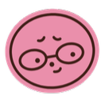
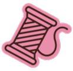
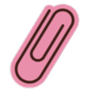

Olá, eu sou a <Mirelly>
Tenho 19 anos e sou uma estudante de Tecnologia da informação curiosa e dedicada, apaixonada por transformar ideias em código.


MIRELLY
OLIVEIRA NUNES
Tenho 19 anos e sou uma estudante de Tecnologia da informação curiosa e dedicada, apaixonada por transformar ideias em código.

Minha jornada na tecnologia começou no
ensino médio, onde me formei em dezembro no curso técnico de Análise e Desenvolvimento
de Sistemas — foi ali que tive meu primeiro contato com HTML, CSS, javascript
e disciplinas mais teóricas da área.
No meio do ano seguinte, entrei no Instituto Percorre, no curso de Desenvolvimento Web,
onde aprofundei HTML, CSS e JavaScript, além de aprender a usar Git/GitHub e Canva na prática.
Ao concluir o curso, ingressei no programa STAR TECH, da TOTVS, com foco em Python
para análise de dados, machine learning e inteligência artificial — sempre buscando a
prender mais e evoluir minhas habilidades com dedicação e curiosidade.

facilidade emestruturar tarefas e manter projetos.

capacidade de transmitir ideias de forma clara e objetiva

iniciativa em aprender,resolver problemas e buscar melhorias.

Desenvolvimento deideias criativas para projetos visuais e funcionais

Controle de versões e colaboração em equipe.

Estruturação de paginas web de forma semântica e organizada.

Criação de layouts responsivos e interfaces visuais estilizadas.

Desenvolvimento de interatividade e funcionalidades para aplicação web.

ler

bordar

edição
de imagem

...
...
...